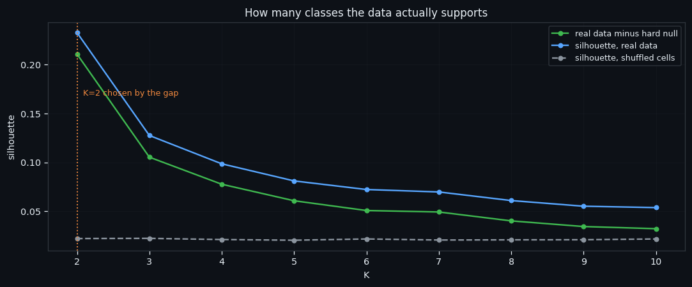
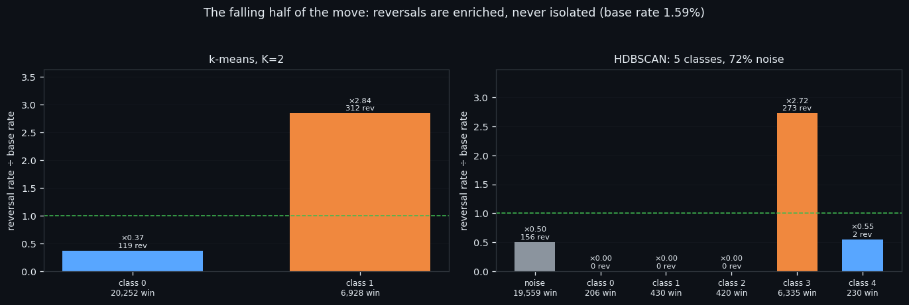
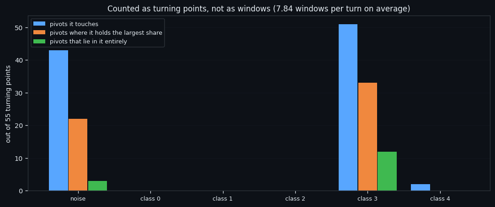
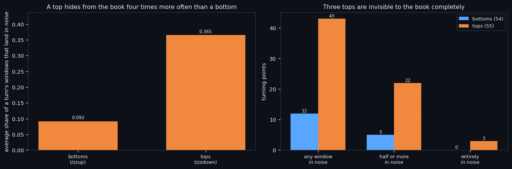

Tops Hide, Bottoms Don't: an Asymmetry We Did Not Expect
This is the mirror of the previous study: the fall from a top to a bottom, 27,180 windows, the same pipeline to the letter. The structure repeats — and one number does not. Tops hide from the order book four times more often than bottoms do.
Full walkthrough — streamed from YouTube.
① The mirror image of the previous study
The zigzag with a 2.3% threshold cuts the price into legs: every leg runs from one turning point to the next. Take only the falling half — the turn itself (±15 minutes around the pivot) plus the whole leg that follows it — and cluster only those windows, with the feature scale recomputed on this subset so that nothing from outside leaks in.
| the set | value | |---|---| | windows of 210 s | 27,180 | | reversal windows in them | 431 (1.59%) | | legs of the zigzag in the dataset | 120, average 33.9 h |
One objection has to be said out loud before any number: the zigzag knows the future. A leg is only a leg once the next turn has happened. So a class found inside one half of a move is not, by itself, something a live bot can use — it first has to know which half it is in. We measure that separately, and the answer is that the book barely knows.
Everything in this series feeds one goal: an automated trading bot that reads the order book instead of the price. Which is why this study is a measurement, not a strategy: it tells us how much of the structure we see is really about the direction of the move.

② The structure repeats exactly
Same result as on the whole dataset, and that is the point of running it: the split does not change when we restrict it to one half of the move.
| split | classes | the reversal-rich one | reversals in it | versus base | |---|---|---|---|---| | k-means | K=2 | 6,928 windows (25%) | 312 | ×2.84 | | HDBSCAN | 5 + noise | 6,335 windows | 273 | ×2.72 |
The quiet classes hold almost no reversals at all, the noise holds 156 of them at ×0.50. Stability is 0.764 against 0.207 for the hard null.
Everything in this series feeds one goal: an automated trading bot that reads the order book instead of the price. A filter that works the same way in both halves of a move is a filter that does not need to know the direction — which is the only kind we can put in a bot.

③ Counted as turning points
Counting reversal windows is misleading on its own. Windows step every 210 seconds, so up to nine of them fit into the ±15-minute band around a single pivot: one cluster of windows easily looks like nine separate events. So everything gets recounted per turning point, with the metric being the share of a turn's windows that a class holds — 1.0 if the turn lies in it entirely, 0.03 if it holds one window out of thirty.
| | windows | turning points touched | where it holds the largest share | turns lying in it entirely | |---|---|---|---|---| | noise | 156 | 43 | 22 | 3 | | class 0 | 0 | 0 | 0 | 0 | | class 1 | 0 | 0 | 0 | 0 | | class 2 | 0 | 0 | 0 | 0 | | class 3 | 273 | 51 | 33 | 12 | | class 4 | 2 | 2 | 0 | 0 |
431 reversal windows belong to 55 distinct turns — 7.84 windows per turn. The noise holds an average share of 0.365 of a turn.
Everything in this series feeds one goal: an automated trading bot that reads the order book instead of the price. For a bot this is the difference between "we catch 200 signals" and "we catch 30 events, several times each" — and only the second number is real.

④ The asymmetry: a top is a quieter event
Everything about the two halves matches: the same K, nearly the same class sizes, nearly the same enrichment of reversals. The asymmetry is in what the clustering fails to place.
| | bottoms (rising half) | tops (falling half) | |---|---|---| | average share of a turn's windows landing in noise | 0.092 | 0.365 | | turns with any window in noise | 12 of 54 | 43 of 55 | | turns with half or more in noise | 5 | 22 | | turns lying entirely in noise | 0 | 3 |
At a bottom the book always says something: not one bottom disappears completely. At a top three do, and half the tops have most of their windows unplaced. A top, it seems, is more often a quiet event — buyers simply stop arriving — while a bottom is loud, because someone has to step in front of a falling price.
What is next. Before trusting any of this, it has to survive being rebuilt on different data — so the following study redoes the whole clustering week by week, 25 times from scratch, and compares each week with the global answer. Everything in this series feeds one goal: an automated trading bot that reads the order book instead of the price. And a bot that shorts tops on an order-book signal needs to know that its signal is weaker there, by design.

If this changed how you read the tape, the natural next step is Twenty-Five Weeks, Twenty-Five Rebuilds: Which Clustering Survives —
Twenty-Five Weeks, Twenty-Five Rebuilds: Which Clustering Survives
Throwing Away a Third of the Data and Keeping 98% of the Reversals
Volume Is the Fuel — Not the Steering Wheel
We recorded the Binance order book every second for six coins over five months and ran eighteen tests on what volume really does.
About Market Research Lab — What We Collect and Why
Most market commentary is storytelling.
Comments
Discussion is powered by GitHub. Enable it by adding secrets/giscus.json (repo IDs from giscus.app).